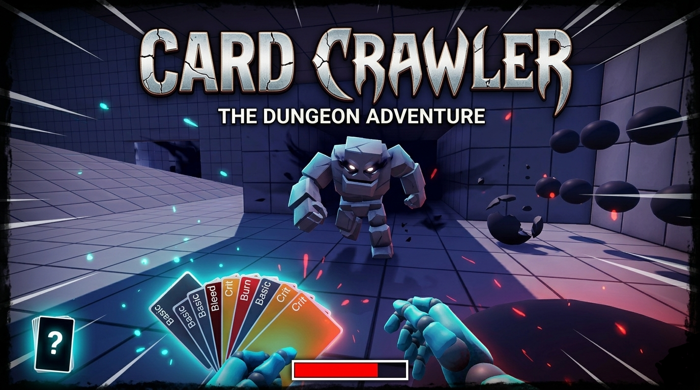
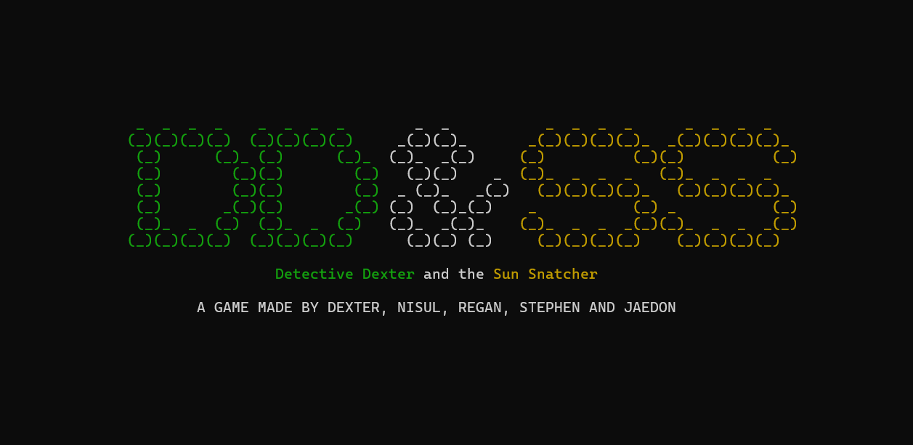
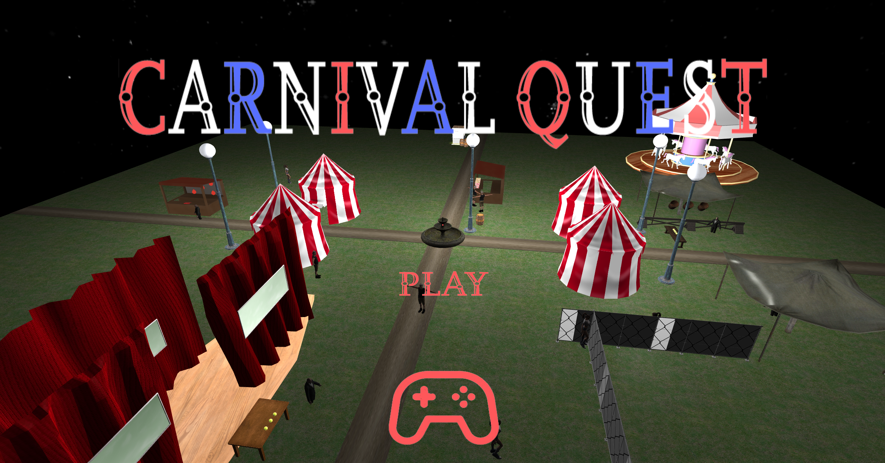
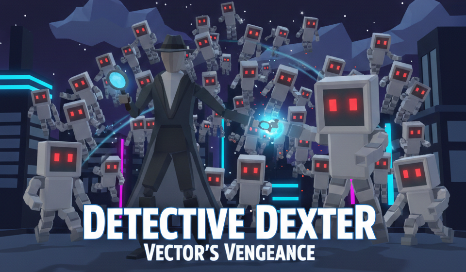

Featured Projects

Card Crawler
First-person 3D dungeon crawler with a card-based combat engine. Solo project, alpha build in progress.

Detective Dexter & The Sun Snatcher
Real-time ASCII dungeon crawler RPG with 5 branching endings, built in C++ from scratch. Team of 5.

Carnival Quest
3D carnival simulation with four playable minigames, custom physics, and a scene editor. Team of 4.

Detective Dexter & The Parade Pooper
2D Metroidvania platformer across nine scenes with FSM-driven movement abilities and multi-stage bosses. Team of 4.

Detective Dexter & Vector's Vanquishing
3D bullet heaven survivors-like with 20+ upgradeable stats, rarity-based loot, and a final boss encounter. Team of 4.